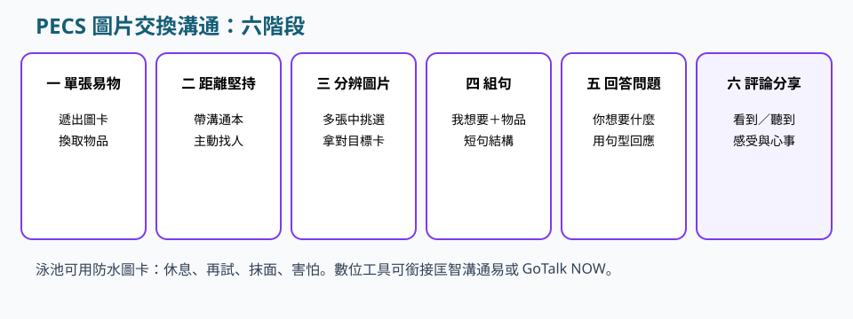
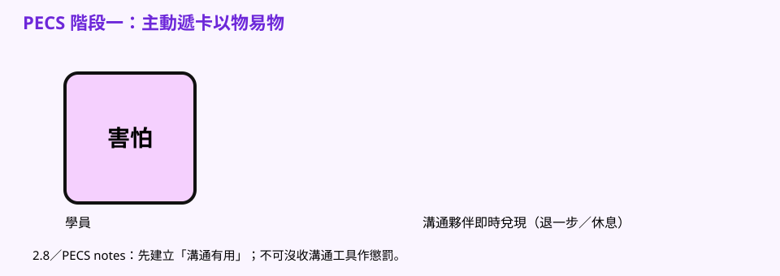
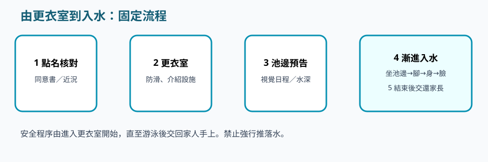
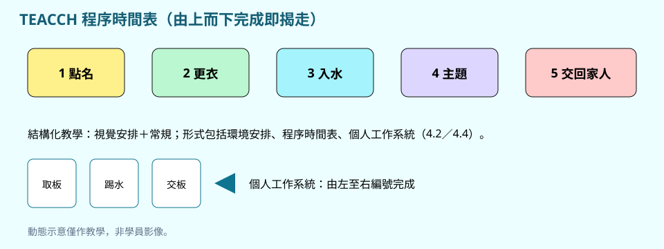
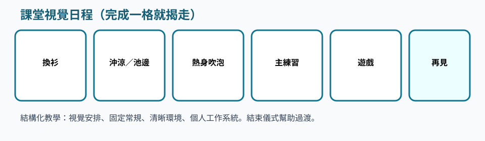

時間表、工作系統、PECS。讀完後對照範本改寫。
類別 · 2.6
請依序研讀導讀、重點與池邊準則，聽粵語說明，再以練習核對理解。
本網站根據課程講義、課堂分享與溝通工具筆記整理，供未能出席面授的學員系統研讀。不能代替醫療診斷、法律意見、課堂實習或面授扶抱示範。涉及健康、用藥、脊柱或癲癇等情況，須按家長／醫護文件執行。
以 TEACCH 視覺結構化降低未知。入水採看→接觸→部分浸入；恐慌即退回上一階段，禁止推落水。游泳協助適應與安全，不能根治自閉症。
研讀次序：重點 → 粵語說明 → 本單元練習 → 下一單元「特殊學習困難和常見精神病」。


講義出處：2.6 自閉症譜系障礙 · 臨床焦點
課堂情境
學員外表合作，內在可能已高焦慮。
教學原則
香港診斷焦點包括社交、溝通缺損、重複行為與狹隘興趣；女性或較會掩飾（masking），焦慮可能被低估。
池邊執行
不宜只看「乖」；用圖卡讓他表達害怕，並觀察回聲、人多時的逃避。
講義出處：2.6 自閉症譜系障礙 · 水中價值
課堂情境
家長要求保證游泳可治癒自閉症。
教學原則
水溫與壓力可預測；視覺示範多於複雜口語；可練習共同注意、輪流與模仿；目標是減少症狀對生活影響及提升適應，不是治癒。
池邊執行
教案寫適應目標，口頭拒絕「根治」承諾。
講義出處：2.6 自閉症譜系障礙 · 入水
課堂情境
有人想從後推學員落水，以為驚嚇即可適應。
教學原則
SOS 漸進：看、接觸、再部分身體浸入；極度恐慌即退回上一階段；禁止強行推落水，以免長期恐水。
池邊執行
今日只坐池邊都算完成；按頭入水絕對禁止。

講義出處：2.6 自閉症譜系障礙 · 溝通
課堂情境
泳池回聲偏大，學員崩潰。
教學原則
手勢、圖卡、模仿策略（先鏡像學員再引導）；回聲可能引發崩潰。
池邊執行
減聲量或選較靜時段；固定同一條水線、同一教練盡量一致；結束儀式清楚；與家長統一圖卡。
講義出處：2.6 自閉症譜系障礙 · TEACCH 五要素
課堂情境
流程一改，學員即崩潰。
教學原則
用視覺優勢把環境、時間表、作業程序結構化：視覺安排、常規、環境、程序時間表、個人工作系統。
池邊執行
固定水線與結束儀式，讓學員看見開始與完成。


講義出處：2.6 自閉症譜系障礙 · 比例與感覺
課堂情境
回聲大，學員摀耳。
教學原則
自閉症比例參考 1:3，崩潰則 1:1；部分柔軟度不足。
TEACCH／結構化Maskingstructured teachingvideo modelling
三題判斷：下列做法是否符合本單元池邊準則。
以下與本頁錄音同一份講稿。建議先讀重點，再聽說明，把判斷次序聽清楚。